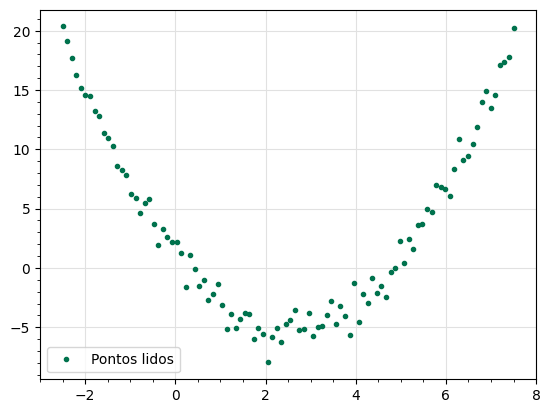

Ajuste de cuvas com Python#
%matplotlib inline
import numpy as np
import pandas as pd
from scipy.optimize import curve_fit
from matplotlib import pyplot as plt
Carregamento dos dados do experimento#
dados = pd.read_csv('dados_adq.csv') # carrega um cunjunto de dados do experimento (arquivo CSV/excel* com duas colunas: 'X' e 'Y', de valores reais
X = dados['X'].to_numpy() # passa a coluna 'X' para a variável X, no tipo Numpy Array
Y = dados['Y'].to_numpy() # passa a coluna 'Y' para a variável Y, no tipo Numpy Array
#plt.figure(figsize=(13, 8)) # para aumentar figura, descomente esta linha (removendo o '#' no começo da linha)
ax = plt.gca()
ax.plot(X, Y, '.', color="#00724d", label="Pontos lidos")
plt.minorticks_on()
plt.grid(which="major", visible=True, color="#e1e1e1")
plt.legend()
plt.show()
#plt.savefig('regressao.png') # Para salvar imagem, comente a linha anterior e descomente esta linha (removendo o '#' no começo da linha)

Definindo uma função de ajuste (quadrática)#
def f_prop(x, a, b, c): # x: variável; a, b, c: conficiente a serem ajsutados
return a*x**2 - b*x + c # retorna uma função polinomial de grau 2
Ajustando a curva com curve_fit#
popt, pcov = curve_fit(f_prop, X, Y)
a, b, c = popt
A função curve_fit ajusta a curva f_prop aos pontos (X, Y), usando o método dos mínimos quadrados não-lianear e retorna os parâmetros popt e pcov. popt contém os valores para os coeficientes a, b e c (vide Referências[1]).
Yaj = f_prop(X, a, b, c)
#plt.figure(figsize=(13, 8)) # para aumentar figura, descomente esta linha (removendo o '#' no começo da linha)
ax = plt.gca()
ax.plot(X, Y, '.', color="#00724d", label="Pontos lidos")
ax.plot(X, Yaj, color="#b32305", label="Função ajustada")
plt.minorticks_on()
plt.grid(which="major", visible=True, color="#e1e1e1")
plt.grid(which="minor", visible=True, color="#f0f0f0", linestyle="--")
plt.legend()
plt.show()
#plt.savefig('regressao.png') # Para salvar imagem, comente a linha anterior e descomente esta linha (removendo o '#' no começo da linha)

Referências#
Técnicas de ajuste de cuvas com Scipy